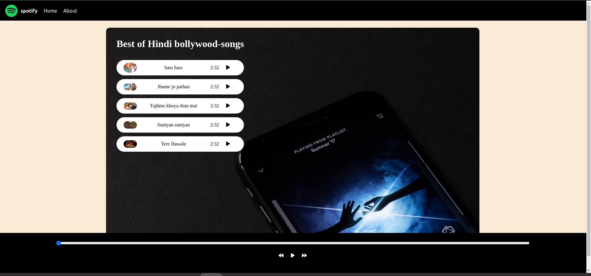
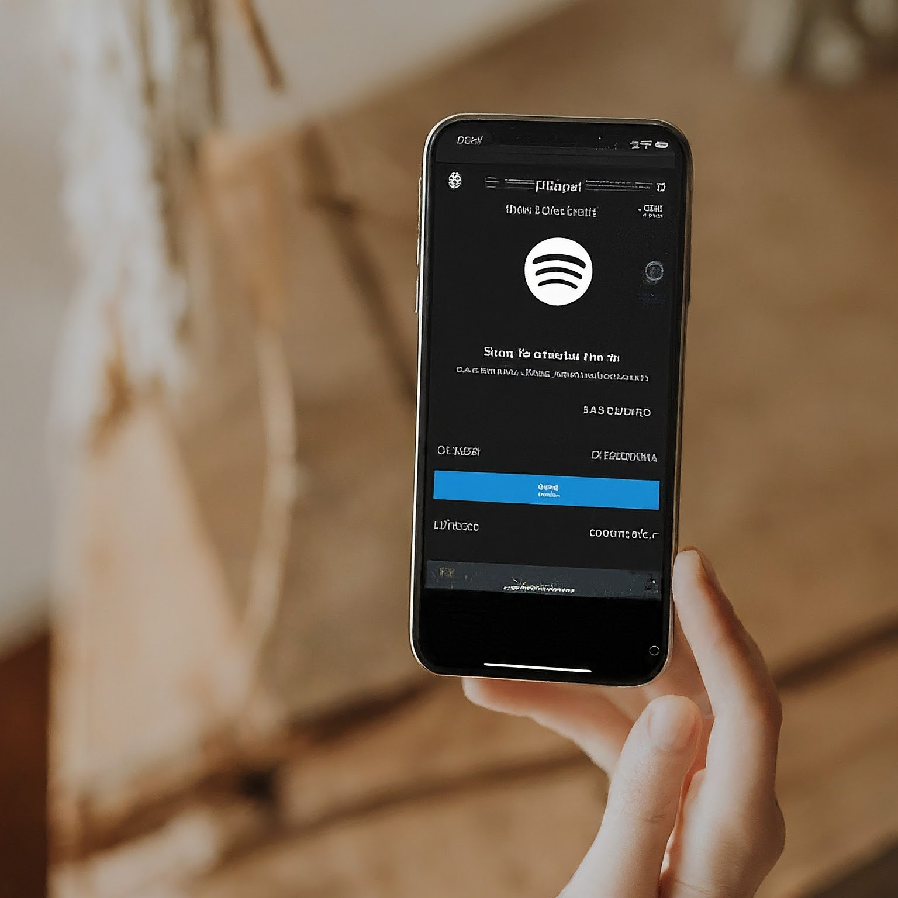

Welcome to our Spotify Clone music player! This project is a web-based application designed to replicate the core functionalities of the popular music streaming service, Spotify. The purpose of this clone is to provide a user-friendly platform where users can enjoy their favorite music tracks with an intuitive interface and smooth performance.
The primary goal of the Spotify Clone project is to create a functional and aesthetically pleasing music player that offers users a similar experience to the original Spotify application. This project aims to demonstrate proficiency in web development technologies, including HTML, CSS, and JavaScript, while implementing key features such as:
This project utilizes the following technologies and tools to create a seamless and responsive music player:
The Spotify Clone music player offers a variety of features to enhance the user experience:
During the development of this project, several challenges were encountered and addressed, including:
These challenges were tackled through thorough testing, the use of media queries for responsiveness, and implementing event listeners to manage playback state changes.
While the current version of the Spotify Clone provides core functionalities, there are several enhancements planned for future development:
The Spotify Clone music player is a demonstration of web development skills, combining HTML, CSS, and JavaScript to create a functional and visually appealing application. This project serves as a foundation for further enhancements and showcases the potential for building sophisticated web applications.
Thank you for exploring our Spotify Clone. We hope you enjoy using it as much as we enjoyed creating it!